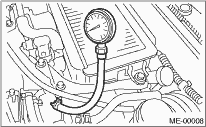

MECHANICAL(H4DO) > Intake Manifold Vacuum
1. Remove the collector cover. (DOHC Turbo model)
2. Warm-up the engine.
3. Disconnect the brake vacuum hose from the brake vacuum hose, and then install the vacuum gauge.
4. Keep the engine at idle speed and read the vacuum gauge indication.
By observing the gauge needle movement, internal condition of the engine can be diagnosed as described below.

Vacuum pressure (at idling, A/C “OFF”):
DOHC Non-turbo model
Less than −60.0 kPa (−450 mmHg, −17.72 inHg)
DOHC Turbo model
Less than −60.0 kPa (−450 mmHg, −17.72 inHg)
|
Diagnosis of engine condition by measurement of manifold vacuum | |
|
Vacuum gauge indication |
Possible engine condition |
|
1. Needle is steady but lower than normal position. This tendency becomes more evident as engine temperature rises. |
Leakage around intake manifold gasket, or disconnected or damaged vacuum hose |
|
2. Needle intermittently drops to position lower than normal position. |
Leakage around cylinder |
|
3. Needle drops suddenly and intermittently from normal position. |
Sticky valve |
|
4. When engine speed is gradually increased, needle begins to vibrate rapidly at certain speed, and then vibration increases as engine speed increases. |
Weak or broken valve springs |
|
5. Needle vibrates above and below normal position in narrow range. |
Defective ignition system or throttle chamber idle adjustment |